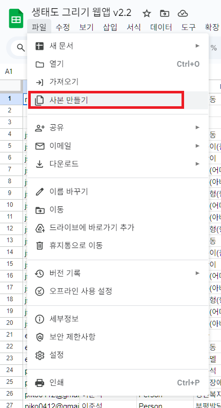

사본 만들기
제공된 도구를 사용자의 구글 드라이브로 안전하게 복사하는 방법
제작자가 공유한 도구를 **'사본 만들기'**를 통해 가안의 구글 드라이브로 가져오면, 데이터가 제작자의 시트가 아닌 사용자의 개인 공간에 안전하게 저장됩니다.
💡 왜 사본을 만드나요?
- 데이터 보안: 사용자만의 독립적인 데이터 저장 공간을 확보합니다.
- 자유로운 편집: 원본 코드를 훼손하지 않고 자신의 필요에 맞게 수정하여 사용할 수 있습니다.
- 영구 보관: 제작자의 공유가 중단되어도 내 드라이브에서 계속 사용할 수 있습니다.
※ 링크 클릭 시 바로 '사본 만들기' 버튼이 나타나거나, 시트 메뉴의 [파일] > [사본 만들기]를 통해 진행할 수 있습니다.

사본 만들기 실행 화면